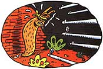

LAST LAUGH
The relationship of gardeners and slugs can be summed up in two words: mortal enemies. "These guys are eating everything," my wife mutters, looking around at the tattered foliage. She spies one and squishes it in a gloved fist. "Gotcha, you little creep. Say your prayers." It's a safe bet to say this particular slug is about to have a bad day. Joy has watered and nurtured the garden all through the summer's heat, so clemency is unlikely.
She is a transplanted Vermonter, rather set in her beliefs about slugs; no use telling her that these gooey bugs are a natural fixture of Oregon's summer landscape. At one time, I even spoke in their defense. Sure, slugs are often found in gardens on half-eaten leaves, I stipulated, but the evidence against them is purely circumstantial. After all, slugs don't actually have teeth.
"Chlorophyll and cellulose are missing," says Joy, always the pragmatist. "I don't care how the slugs did it."
Live and let live, I used to think. But that was before I found out that the cellulose was missing from my tomatoes; nearby, slugs were emitting little belches and trying to look casual. After that, I took a more Vermontish approach and made it my business to study Limacidae amicus: our friend, the slug. Historically, these sticky mollusks were once useful to humankind. When the first cave persons invented glue, they turned to the slug for raw material, mashing them into a paste guaranteed to hold hides against the body. For a really good grip on a spear, hunters first squished a slug or two along the shaft.
And around the cave, nothing was handier than a slug on a stick for picking up lint, hair, and other debris. "Hasta la vista, baby," Joy says, winding up for a tremendous pitch. She hurls the slug with force and accuracy down to the chicken coop, where it is welcomed with open beaks. Frankly, this method is too graphic to describe or imagine. Call it "The Funky Chicken." My wife hands me a fresh victim. "Here," she says, "one for the road." I prefer to lob slugs into the middle of the highway near our house. Eventually a logging truck roars by, and the slug hitches a ride, so to speak. We call this technique "The Black Ice."
There are many ways to get rid of slugs. Slug eradication, in fact, makes shooting fish in a barrel look difficult. The extreme slowness of slugs allows gardeners time to designate a victim, go answer the phone, write a few letters, take a nap, watch some TV, and then go back outside to smash them with a shovel before they can turn to flee. But this method ("The Shovel Off") is crude, unimaginative, and unnecessarily messy. As the poet Robert Burns wrote, "Wee, slickit, cowering, timorous beastie/I'll tek ma shoovel and mak you pastie/But och, the gorps are verra nastie" But there are cleaner methods. I've often dreamed of taking a pail of them out to the Bonneville Salt Flats and launching them off golf tees with a mashie-niblick: "The Sand Trap."
One can also sprinkle them with salt ("The High-Sodium Die"), but be advised that salted slugs make a real production out of shuffling off their mortal coil. There are several disturbing reports that they only fake their demise-lying there stiff and lifeless as a rake handle until they're someday reconstituted with rain water, at which time they revive and stagger off. So I pass along the following hint: if you ever drop one into a can of kerosene and it survives,
call the Guinness Book of World Records and don't make it mad, because that's one tough slug. Squeamish gardeners can avoid actually committing slugicide if they happen to live in a region with caves or sinkholes. An acquaintance of mine gardens on a mountain riddled with mine shafts, one of which is so bottomless that he can hear faint sounds of people speaking Chinese. He takes slugs from his garden and simply drops them in. None has ever returned from "The Long Goodbye" Another gravity-fed slug remover is a swiftly moving river, preferably white water rapids.
Put the slug on a cedar shingle, insert this little canoe in the water, wish him bon voyage, and your conscience is clear. If he paddles like heck, he might even survive "The Unlucky Pierre." Finally, we come to the most elegant and humane termination of all. Slugs come for miles when one fills up an oil pan with stale beer and leaves it out overnight in the garden. The next morning, 40 or 50 of them will be inside the pan, looking very mellow if somewhat dead. Slugs have definitely perfected a cure for hangover: "The Last Happy Hour."
|
 |
|
|